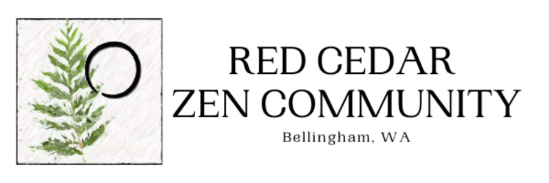

Test page standing in for redcedarzen.org. Everything below the menu is the snippet that gets pasted into Wild Apricot.
Log in
Donate

Home
Events
Teachings
Membership & Giving
Practice
Ethics & Safety
About